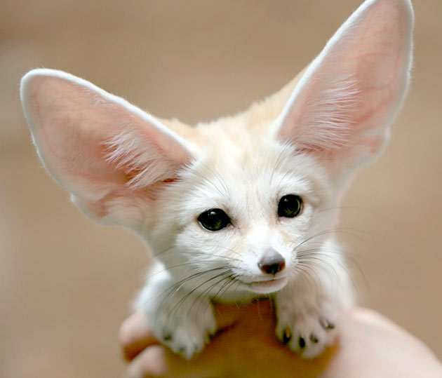

Фенек
Фенек — самый маленький представитель семейства псовых, по размерам он меньше домашней кошки. Высота 18—22 см,
длина 30—40 см, весит до 1,5 кг. Морда короткая, заострённая. Глаза большие. Уши фенека — самые
большие среди хищников по отношению к величине головы, до 15 см в длину.